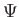
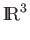
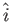
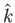
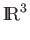
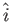
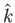
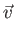

Next: Superposition
Up: State Vectors and Dirac
Previous: State Vectors:
Contents
The standard notation for a state vector is a ket vector
| . For example, a vector in  with basis
,, is typically written as
. For example, a vector in  with basis
,, is typically written as
 =
a +
b
+
c = (
a,
b,
c)
T.
|
v
=
a|
i +
b|
j +
c|
k = (
a,
b,
c)
T.
 y|. The inner product of a bra and a ket
vector is written
y| x, and is called a bracket
[18].
y|. The inner product of a bra and a ket
vector is written
y| x, and is called a bracket
[18].
Next: Superposition
Up: State Vectors and Dirac
Previous: State Vectors:
Contents
Matthew Hayward GitHub Repository